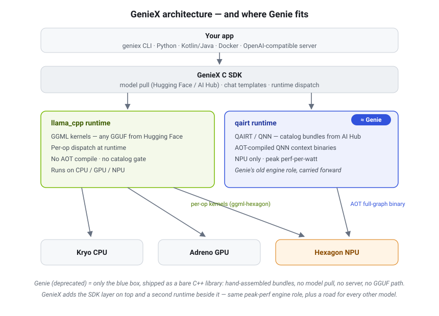

Local LLM Serving: NVIDIA GPUs vs Qualcomm NPUs
Offline inference of open-weight Hugging Face models — toolchains, steps, and limits. Target device: Qualcomm Dragonwing IQ-9075. Notes, August 2026.
1. Why the two paths are fundamentally different
NVIDIA — The GPU is a general-purpose massively-parallel processor with a mature compiler stack (CUDA). Inference frameworks execute the model directly from its original weights: the safetensors files from Hugging Face are loaded and run as-is (or quantized on the fly). The runtime interprets the architecture from config.json at load time. No ahead-of-time hardware-specific conversion.
Qualcomm (IQ-9075 / Dragonwing) — A heterogeneous SoC: Kryo CPU + Adreno GPU + Hexagon NPU. The NPU holds the AI TOPS but is a DSP-like accelerator, and the official path to it executes only pre-compiled static graphs: ahead-of-time compilation into a QNN context binary (quantized, graph-frozen, per-SoC). The architecture is co-engineered three times — Python adaptation layer, compiled graph, and Genie C++ runtime — which is why only a catalog of supported architectures works. (AOT is a property of this QNN path, not of the NPU silicon — §9 covers the second way to drive it.)
2. Path 1: NVIDIA (RTX / Jetson / data-center)
Tools: llama.cpp/Ollama (easiest), vLLM (serving throughput), TensorRT-LLM (max perf), or plain transformers.
pip install vllmvllm serve meta-llama/Llama-3.1-8B-Instruct— downloads safetensors from HF and serves an OpenAI-compatible API (gated repos like meta-llama need an HF token first). Done.- Optional: pick a quantized variant (GGUF, AWQ, GPTQ, FP8) to fit VRAM — quantization is done by the community/you with open tools, not the vendor.
Key property: any architecture with a transformers implementation runs day one — including a model released this morning. TensorRT-LLM adds an optional compile step for speed, but it's a choice, not a gate.
3. Path 2: Qualcomm IQ-9075 — three routes
Route A — llama.cpp on CPU/GPU no conversion
Grab a GGUF from HF, run llama-cli/llama-server on the Kryo CPU or the Adreno GPU (OpenCL backend). Any GGUF model works — same freedom as NVIDIA — but the NPU sits idle, so performance and power efficiency fall far below the chip's potential.
Route B — llama.cpp Hexagon NPU backend new · open-source
Qualcomm upstreamed a Hexagon backend into llama.cpp (Android first; Linux support landed April 2026, targeting exactly this device class). Independent efforts (ggml-hexagon, llama.cpp-npu) program the NPU directly with HVX intrinsics, bypassing QNN. GGUF in, NPU acceleration out, no per-model vendor conversion — still maturing (op coverage, quant formats). GenieX (§9) now ships this backend as its supported llama_cpp runtime.
Route C — Official stack: AI Hub → QAIRT/QNN → Genie full NPU perf
| Piece | What it is |
|---|---|
| QAIRT SDK (formerly QNN / AI Engine Direct) | Compiler + runtime; converts ONNX/PyTorch graphs to NPU context binaries (v2.29+ for IQ-9075) |
Qualcomm AI Hub (pip install qai-hub qai-hub-models) | Cloud service that runs conversion/quantization/compilation and profiles on real devices — self-service for catalog models only |
| Genie | Lightweight on-device LLM runtime: loads context binaries, handles autoregressive decoding, KV cache, sampling on the NPU |
Measured perf on this hardware class: ~10 tok/s for Llama 3.2 3B, ~5 tok/s for Llama 3.1 8B — usable interactive speeds at a few watts.
4. The real limitation: what Qualcomm's engineers do per model
You cannot convert an arbitrary HF LLM. Every supported LLM in qai-hub-models has a hand-written implementation by Qualcomm engineers. The catalog is the boundary, per chip — see aihub.qualcomm.com filtered by device "Dragonwing IQ-9075".
4.1 Architecture surgery (per model family)
In _shared/llama3/model_adaptations.py the HuggingFace modeling code is rewritten into NPU-friendly form:
SHALlamaAttention— multi-head attention rewritten as single-head attention (lists of small per-head ops), which maps far better onto the Hexagon HTP than one big batched matmulnn.Linearlayers → 1×1 Conv2d (ConvInplaceLinear) — HTP prefers conv kernels- A custom RoPE implementation (real/imag half-split instead of HF's interleaving)
- A custom KV-cache class (
SHADynamicCacheNewValueOnly) emitting only the new KV values as graph outputs, since the cache lives outside the static graph - Magic constants matched to Genie's C++ internals — a Genie-era source comment read: "Align with Genie (Genie/src/qualla/src/src/engines/qnn-htp/nsp-model.cpp)" for the attention-mask clip value (−1000.0 vs −50.0 depending on precision)
4.2 Per-model constants
Each model (e.g. llama_v3_2_3b_instruct/model.py) hard-codes: number of splits (3B: 28 layers shipped as 3 binaries), head counts, hidden size, quantization recipe overrides, which params stay INT8.
4.3 Genie runtime support
The C++ runtime itself must implement the architecture's specifics (RoPE scaling variants, GQA kv-dim, sampler behavior). A new attention scheme or MoE router = new Genie code.
What you CAN do self-service
- Recompile catalog models for your chip / context length
- Push fine-tuned weights of a catalog architecture through the pipeline (
quantize.py --checkpoint <your-finetune-dir>) - The repo is BSD-3 open source, so a third party could add a new architecture by following the pattern — but that's weeks of engineering, not running a converter
5. Deep dive: the AI Hub quantization pipeline
HF safetensors
→ adapted PyTorch model (SHA attention, conv-linears, static shapes)
→ ONNX export, split into 3 parts × 2 graph variants
→ AIMET-ONNX QuantSim + calibration → model.encodings
→ AI Hub cloud compile (per target SoC)
→ 3 × QNN context binaries (.bin) → Genie bundleTwo graphs per model, sharing one set of weights
Because the NPU only runs static shapes, the export creates two "instantiations":
- Prompt processor —
prompt_ar128_cl4096: consumes 128 tokens per pass (prefill) - Token generator —
token_ar1_cl4096: 1 token per pass (decode)
Both compile into the same context binaries with weight_sharing_enabled: true, so weights exist once in memory. The KV cache is graph I/O with fixed shape (context_length − sequence_length slots) — which is why context length is baked in at compile time.
The quantization scheme (from _shared/llm/model.py)
| Component | Precision |
|---|---|
Weights (default w4a16) | INT4, min-max scheme, AIMET HTP config |
| Activations | INT16 |
| KV cache | INT8, quantizers tied across concat ops |
| LM head matmul | mixed 16×8 (16-bit activations × 8-bit weights) |
| Selected params (embeddings etc.) | held at INT8 per-channel symmetric |
Alternative w4 mode | INT4 weights, FP16 activations, INT8 lm_head |
Calibration
quantize.py runs ~20 WikiText samples at sequence length 2048 through the FP model under AIMET-ONNX's QuantizationSimModel to compute quantization ranges, saved as model.encodings. Optional accuracy-recovery passes: --use-seq-mse (Sequential MSE per-layer weight-rounding optimization), AdaScale, and --spinquant r1,r2,r3 (rotation-based outlier suppression). Quality is then checked with perplexity/MMLU evaluators in the same repo.
Compile and practical numbers
The compile step happens on AI Hub's cloud (QAIRT compiles the quantized ONNX into HTP context binaries for the exact target SoC). Export takes 2–3 hours; the 3B model recommends ~80 GB RAM+swap on the host.
# fine-tuned weights of a supported arch, then export for your board:
python -m qai_hub_models.models.llama_v3_2_3b_instruct.quantize \
--checkpoint ./my-finetune --use-seq-mse -o ./quantized
python -m qai_hub_models.models.llama_v3_2_3b_instruct.export \
--checkpoint ./quantized --device "Dragonwing IQ-9075" \
--context-length 2048 --output-dir genie_bundle6. Deep dive: Genie config, field by field
Production config for Llama 3.2 3B (from ai-hub-apps/tutorials/llm_on_genie/configs/genie/), annotated:
{ "dialog": {
"version": 1,
"type": "basic", // basic text-to-text; other types exist (e.g. embedding)
"context": {
"size": 4096, // MUST match the compiled context length
"n-vocab": 128256, // vocab size of the model
"bos-token": 128000,
"eos-token": [128001, 128008, 128009] // all stop tokens
},
"sampler": { // runtime-tunable, NOT baked into the binary
"seed": 42, "temp": 0.8, "top-k": 40, "top-p": 0.95
},
"tokenizer": { "path": "tokenizer.json" }, // verbatim from the HF repo
"engine": {
"n-threads": 3,
"backend": {
"type": "QnnHtp", // NPU. (QnnGpu/QnnCpu exist as fallbacks)
"QnnHtp": {
"use-mmap": true, // mmap weights (set false on Windows laptops)
"spill-fill-bufsize": 0, // scratch buffer shared across the split graphs
"mmap-budget": 0,
"poll": true, // busy-poll the NPU instead of interrupts (latency)
"cpu-mask": "0xe0", // pin Genie's CPU threads to big cores
"kv-dim": 128, // head_dim of the KV cache
"allow-async-init": false
},
"extensions": "htp_backend_ext_config.json" // per-chip file, below
},
"model": {
"type": "binary",
"binary": { "ctx-bins": [ // the compiled splits, in order
"llama_v3_2_3b_instruct_part_1_of_3.bin",
"llama_v3_2_3b_instruct_part_2_of_3.bin",
"llama_v3_2_3b_instruct_part_3_of_3.bin" ] },
"positional-encoding": { // Genie computes RoPE outside the graph —
"type": "rope", // it must UNDERSTAND your model's variant
"rope-dim": 64, "rope-theta": 500000,
"rope-scaling": { "rope-type": "llama3", "factor": 8.0,
"low-freq-factor": 1.0, "high-freq-factor": 4.0,
"original-max-position-embeddings": 8192 }
}
}
}
}}Note positional-encoding — the architecture-lock made visible in config: Genie only knows the RoPE variants implemented in its C++ (llama3 scaling here). A model with a novel positional scheme cannot be described in this file at all.
The per-chip file: htp_backend_ext_config.json
{ "devices": [{
"soc_model": 69, // numeric SoC ID (Gen2=43, Gen3=57, 8 Elite=69, X Elite=60;
"dsp_arch": "v79", // Hexagon ISA version — for IQ-9075 take both values from
"cores": [{ "core_id": 0, // the QAIRT SDK's supported-devices table)
"perf_profile": "burst", "rpc_control_latency": 100 }] }],
"memory": { "mem_type": "shared_buffer" },
"context": { "weight_sharing_enabled": true } // prefill+decode graphs share weights
}Running it
export LD_LIBRARY_PATH=$QNN_SDK_ROOT/lib/aarch64-oe-linux-gcc11.2 # + Hexagon skels
./genie-t2t-run -c genie_config.json \
-p "<|begin_of_text|><|start_header_id|>user<|end_header_id|>Hello!<|eot_id|><|start_header_id|>assistant<|end_header_id|>"The prompt template is your job at this layer — Genie is lower-level than Ollama; the ChatApp samples in ai-hub-apps wrap it with templates and an OpenAI-compatible service.
7. Deep dive: inside a QNN context binary
The .bin files are not "model files" in the HF sense — they are serialized, finalized QNN contexts. Contents:
- Context metadata — the QAIRT/QNN version that built it, target SoC and Hexagon arch (v73/v75/v79), and HTP configuration (VTCM allotment, optimization level, weight-compression/DLBC settings). This is why a binary is version- and SoC-locked: what follows is compiled for one specific chip generation.
- Prepared graphs — one or more per binary. For an LLM split, each
.binholds both LLM graphs:prompt_ar128_cl4096_N_of_3(prefill) andtoken_ar1_cl4096_N_of_3(decode). "Prepared" means fully lowered by the HTP graph compiler: ops fused and scheduled across the HVX (vector) and HMX (matrix) units, tensors tiled through VTCM (the NPU's on-chip scratch SRAM, ~8 MB class), and a static memory plan including the spill-fill buffer — DDR scratch for intermediate tiles, shared across all three split binaries (thespill-fill-bufsizeknob in the Genie config). - Quantized weights — INT4/INT8 payloads laid out for HMX consumption. With
weight_sharing_enabled: true, the prefill and decode graphs in the same context reference a single copy. - I/O tensor descriptors — names, static shapes, dtypes (e.g. 16-bit fixed-point activations, INT8 KV-cache I/O) and per-tensor scale/offset quantization params. This is how Genie knows how to quantize inputs and dequantize logits/KV at the graph boundary.
Inspecting one
qnn-context-binary-utility --context_binary llama_v3_2_3b_instruct_part_1_of_3.bin \
--json_file part1.json
# → context metadata, graph list, per-graph input/output tensors with dims,
# dtypes, and scale/offset encodings. The compiled kernel code and weight
# blobs remain opaque.Execution path at runtime: Genie → libQnnHtp.so (CPU side) → FastRPC → cDSP skel (libQnnHtpV73Skel.so / V75 / V79) → the NPU executes the prepared graph. The poll/cpu-mask Genie options tune the CPU side of this round-trip; rpc_control_latency in the HTP extensions file tunes the FastRPC link.
8. Deep dive: the _ssd variants — Self Speculative Decoding
AI Hub ships llama_v3_2_3b_instruct_ssd (and friends) — same model, faster decode, with "guaranteed output accuracy identical to the base model." SSD = Self Speculative Decoding: unlike classic speculative decoding there is no separate draft model. From _shared/llm_ssd/model.py:
The mechanism
- Learned forecast tokens. The checkpoint (
forecast_module_state_dict.pt) containsforecast_embedding— extra rows appended to the embedding table (vocab grows byforecast-token-count). Feeding these special tokens makes the model predict several future positions in one pass — multi-token prediction via learned embeddings rather than extra heads, so the compiled graph stays identical to the base model's. - Forecast prefix (precomputed KV).
forecast_prefixis a short precomputed KV-cache segment, quantized to INT8 using the model's ownpast_key_*_in/past_value_*_incalibration encodings and shipped asforecast-prefix/kv-cache.primary.qnn-htp(a raw file: 16-byte header — tensor count,0xC0DEmagic, dtype, heads, kv-dim, tokens — then key caches, then value caches). - Speculation tree. The Genie dialog type flips from
basictossd-q1:
"dialog": { "type": "ssd-q1",
"ssd-q1": {
"forecast-token-count": N, // learned forecast embeddings
"forecast-prefix": L, // length of the precomputed KV prefix
"forecast-prefix-name": "forecast-prefix",
"branches": [3, 2], // speculation tree: 3-wide, then 2-wide
"n-streams": 1,
"p-threshold": 0.0 // probability cutoff for pruning branches
} }- Wide verify graph. The SSD token generator compiles an AR-32 graph instead of AR-1 (the base repo notes "SSD uses an AR-32 token graph") — one NPU pass scores up to 32 positions, so drafting the tree and verifying it happen in a single shot.
- Engine overrides:
n-threads: 0,mmap-budget: 40,allow-async-init: true.
Why it's faster, and why it's exact
NPU decode is memory-bandwidth-bound: scoring 32 positions costs nearly the same as scoring 1 (weights are streamed either way). If on average >1 speculated token per pass survives verification, tokens/sec multiplies. And because the same model verifies its own drafts with standard speculative accept/reject, the output distribution is mathematically identical to the base model — pure latency optimization, zero accuracy trade.
The catch: quantizing your own SSD variant means training/calibrating the forecast module — the README calls for a dedicated CUDA GPU (40 GB VRAM for 3B, 80 GB for 8B). Another reminder of how vendor-engineered this path is.
9. Update (mid-2026): GenieX replaces Genie
The _ssd README states: "Note: Genie support will be deprecated soon." The replacement is GenieX — an open-source runtime from Qualcomm's Nexa AI acquisition (developer preview, mid-2026): "run frontier LLMs and VLMs locally on Qualcomm devices across NPU, GPU, and CPU with a few lines of code."
GenieX unifies the two worlds this document contrasts, dispatching to either of two bundled runtimes:
| GenieX runtime | Model format | Hardware targets |
|---|---|---|
llama_cpp | GGUF (any) | Hexagon NPU via ggml-hexagon, Adreno GPU via OpenCL, CPU |
qairt | QAIRT .bin shards (catalog) | Hexagon NPU via QNN — max perf-per-watt |
(AI Hub's export scripts emit GenieX-ready catalog bundles via --target-runtime geniex_qairt.)
Two ways to drive the same NPU
A confusion worth clearing first: "using the NPU" and "AOT compilation" are not the same thing. AOT is a property of the QNN path, not of the NPU itself — the Hexagon NPU can be driven two ways, and GenieX contains both.
Way 1 — QNN/QAIRT (AOT, catalog-only). The entire transformer is compiled ahead of time into one frozen graph per SoC. The compiler sees the whole model, so it can fuse ops, plan VTCM tiling, and lay out weights for the HMX matrix unit. Maximum perf-per-watt — and everything §4–§7 describe about catalogs and conversion applies.
Way 2 — ggml-hexagon (no AOT, any model). llama.cpp's Hexagon backend works the way CUDA does: it ships a fixed library of pre-compiled kernels (matmul, rmsnorm, softmax…) to the DSP once, then dispatches ops one at a time at runtime, walking whatever graph the GGUF describes. No per-model compilation, no catalog, no Qualcomm involvement — any GGUF runs. The price: no cross-op fusion, more DDR round-trips between ops, less optimal memory planning — meaningfully slower than Way 1, but still NPU-accelerated.
The NVIDIA analogy
| NVIDIA | Qualcomm NPU | |
|---|---|---|
| Runtime op dispatch (any model) | PyTorch / llama.cpp on CUDA | ggml-hexagon (GenieX llama_cpp) |
| AOT whole-graph compile (max perf) | TensorRT engine | QNN context binary (GenieX qairt) |
NVIDIA has the same two modes — you just never think about TensorRT because CUDA's "eager" mode is already fast. On Qualcomm the gap between the two modes is much larger, and historically only the AOT mode existed for the NPU. That's what made the catalog feel like a hard wall.
What GenieX actually solves — and what it doesn't
- It makes Way 2 a first-class, supported product. Before, running an arbitrary GGUF on the Hexagon meant building llama.cpp yourself from a maturing backend (Route B, §3). Now it's pip-install-grade, Qualcomm-supported, one API.
- One runtime, per-model choice. The API and server are the same whether the model is a random GGUF (
llama_cppruntime) or a catalog model at peak efficiency (qairtruntime). App code doesn't change; the backend is a config knob. - Developer experience. Model download, prompt templates, OpenAI-compatible serving — versus hand-assembling Genie bundles, tokenizer files, and HTP config JSONs (§6).
What GenieX does not solve: the perf gap. If you want the ~10 tok/s-class efficiency of the compiled path for a model outside the catalog, GenieX doesn't help — that still takes Qualcomm (or you, weeks of engineering) doing the adaptation work of §4.
So the freedom ladder is better read as a dial inside one tool:
GenieX ─┬─ llama_cpp runtime → any GGUF → NPU (per-op dispatch) [freedom, decent perf]
└─ qairt runtime → catalog → NPU (AOT full graph) [catalog, peak perf]How Genie relates to GenieX
GenieX does not wrap the old Genie library — it is the community successor ("the community version of Qualcomm GENIE," per the repo). Genie's engine role — executing AOT-compiled catalog bundles on the NPU — became the qairt runtime inside GenieX, with an SDK layer above it and a second, catalog-free runtime beside it:

Genie (deprecated) was only the qairt box in this picture, shipped as a bare C++ library: hand-assembled bundles, no model pull, no server, no GGUF path.
10. Summary comparison
| NVIDIA GPU | Qualcomm NPU (QNN catalog path) | |
|---|---|---|
| Model freedom | Any HF architecture, day one | Catalog only (~15 families); fine-tunes of catalog archs OK |
| Conversion | None (optional TensorRT compile for speed) | Mandatory AOT compile to per-SoC QNN context binaries |
| Quantization | Community/self (GGUF, AWQ, GPTQ, FP8), on-the-fly | Vendor recipe (W4A16 via AIMET), baked at compile |
| Context length | Runtime-configurable | Baked into the binary; recompile to change |
| Portability | CUDA binaries broadly portable across GPUs | Context binary tied to one SoC generation |
| Model size ceiling | 24 GB card → 30B-class | Shared LPDDR + W4A16 → ~1B–8B class |
| Perf-per-watt | Lower | Excellent (few watts for 3B @ ~10 tok/s) |
| Escape hatch | — | llama.cpp on CPU/Adreno (any GGUF); Hexagon backend maturing |
Sources
- LLM on Genie tutorial + configs (qualcomm/ai-hub-apps)
- qai-hub-models source —
_shared/llm/model.py,_shared/llama3/model_adaptations.py,llama_v3_2_3b_instruct/ - Qualcomm AI Hub model catalog
- Genie docs
- IQ-9075 EVK (Edge Impulse docs)
- llama.cpp Snapdragon backend docs — Hexagon on Linux (landed April 2026)
- ggml-hexagon · llama.cpp-npu
- qai-hub-models
_shared/llm_ssd/model.py+llama_v3_2_3b_instruct_ssd/— SSD mechanism and Geniessd-q1config - GenieX repo · GenieX developer preview announcement · GenieX docs
- QAIRT CLI tools incl. qnn-context-binary-utility (Radxa docs)